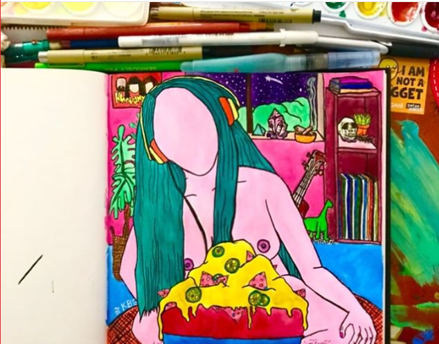

untitled
march 28th, 2019

there are people making a living off of telling people how to make a living. how to live. how to make it. aside form these constant reminders of what life should be, there truly is no real answer. living how it makes sense to you and as long as it doesn't harm other people, I think is the best way to do it. but what the fuck do i know? i'm still figureing it out myself.
0
0
0

sunflowers
march 15, 2019

(sample text) Helianthus or sunflower (/ˌhiːliˈænθəs/)[2] is a genus of plants comprising about 70 species.[3][4] Except for three species in South America, all Helianthus species are native to North America. The common name, "sunflower", typically refers to the popular annual species Helianthus annuus, or the common sunflower, whose round flower heads in combination with the ligules look like the sun.[5] This and other species, notably Jerusalem artichoke (H. tuberosus), are cultivated in temperate regions and some tropical regions as food crops for humans, cattle, and poultry, and as ornamental plants.[6]
(sample text) Perennial sunflower species are not as common in garden use due to their tendency to spread rapidly and become invasive. The whorled sunflower, H. verticillatus, was listed as an endangered species in 2014 when the U.S. Fish and Wildlife Service issued a final rule protecting it under the Endangered Species Act. The primary threats are industrial forestry and pine plantations in Alabama, Georgia, and Tennessee. They grow to 1.8 m (6 ft) and are primarily found in woodlands, adjacent to creeks and moist, prairie-like areas.[7]
0
0
0
chocolate
March 15, 2019
(sample text) The seeds of the cacao tree have an intense bitter taste and must be fermented to develop the flavor. After fermentation, the beans are dried, cleaned, and roasted. The shell is removed to produce cacao nibs, which are then ground to cocoa mass, unadulterated chocolate in rough form. Once the cocoa mass is liquefied by heating, it is called chocolate liquor. The liquor also may be cooled and processed into its two components: cocoa solids and cocoa butter. Baking chocolate, also called bitter chocolate, contains cocoa solids and cocoa butter in varying proportions, without any added sugar. Powdered baking cocoa, which contains more fiber than it contains cocoa butter, can be processed with alkali to produce dutch cocoa. Much of the chocolate consumed today is in the form of sweet chocolate, a combination of cocoa solids, cocoa butter or added vegetable oils, and sugar. Milk chocolate is sweet chocolate that additionally contains milk powder or condensed milk. White chocolate contains cocoa butter, sugar, and milk, but no cocoa solids.
(sample text) Chocolate is one of the most popular food types and flavors in the world, and many foodstuffs involving chocolate exist, particularly desserts, including cakes, pudding, mousse, chocolate brownies, and chocolate chip cookies. Many candies are filled with or coated with sweetened chocolate, and bars of solid chocolate and candy bars coated in chocolate are eaten as snacks. Gifts of chocolate molded into different shapes (such as eggs, hearts, coins) are traditional on certain Western holidays, including Christmas, Easter, Valentine's Day, and Hanukkah. Chocolate is also used in cold and hot beverages, such as chocolate milk and hot chocolate, and in some alcoholic drinks, such as creme de cacao.
0
0
0